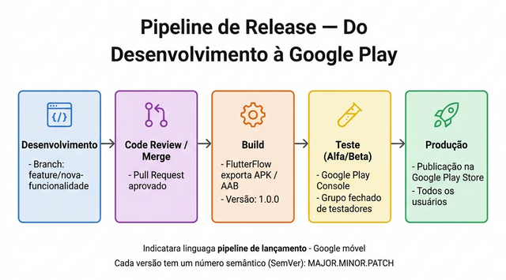
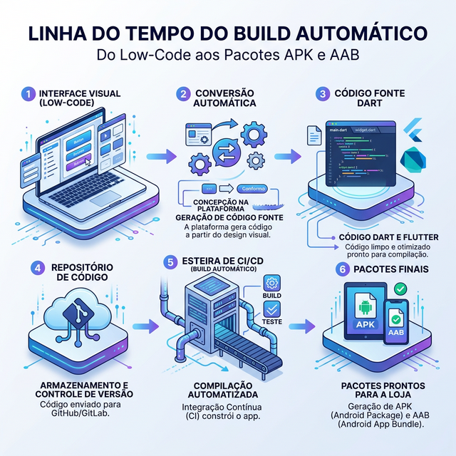
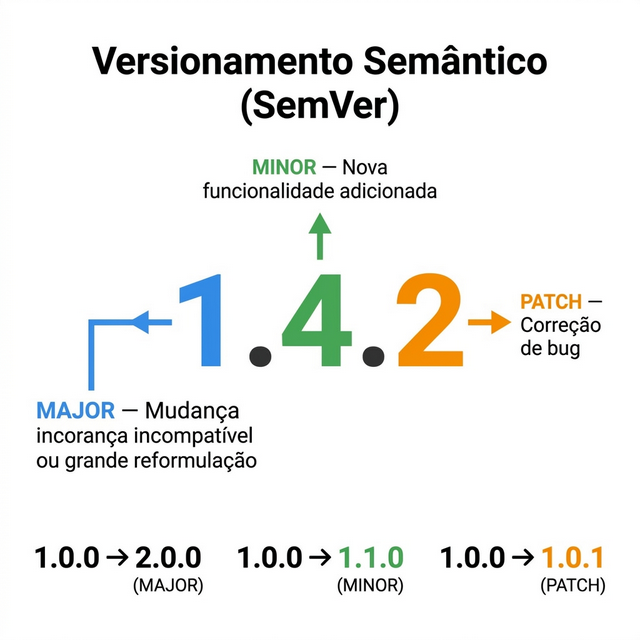

SEMANA 14 – Build e Documentação Final
Nesta semana, você irá finalizar a documentação técnica do projeto e gerar o build final do app para publicação em produção na Google Play Store.
A documentação técnica é o legado do projeto. Ela permite que qualquer desenvolvedor entenda o sistema, dê manutenção no futuro ou o expanda. Nesta reta final, documentar o que foi construído é tão importante quanto o próprio código.
Fonte: Google Developer Blog; Stack Overflow Developer Survey 2023. |
14.1 O Olhar do Avaliador na Documentação Técnica
A documentação técnica final não é apenas um formalismo acadêmico; é a principal "vitrine" avaliada pela banca de apresentação e por futuros mantenedores de código (como no mercado real). Um bom avaliador buscará de imediato clareza na sua arquitetura, a exatidão das Security Rules reportadas e, acima de tudo, se a estrutura permite a fácil configuração e inicialização do projeto por outro desenvolvedor sem fricção.
Estrutura do Documento Técnico Final
- Identificação: nome do app, versão, equipe, data de entrega.
- Descrição do Sistema: propósito, público-alvo e principais funcionalidades.
- Arquitetura: diagrama da arquitetura (FlutterFlow + Firebase); tecnologias utilizadas.
- Banco de Dados: estrutura de coleções, campos e Security Rules.
- Telas e Navegação: mapa de telas e diagrama de navegação.
- Instruções de Configuração: como configurar o projeto no FlutterFlow e no Firebase para outro desenvolvedor.
- Decisões Técnicas: por que certas tecnologias foram escolhidas, dificuldades encontradas e como foram resolvidas.
- Limitações e Trabalhos Futuros: o que não foi implementado e poderia ser feito em versões futuras.
|
Use Notion, Google Docs ou GitHub README para criar a documentação técnica do projeto. Essas ferramentas permitem colaboração em tempo real e fácil compartilhamento via link. |
14.2 Gerando o Build Final no FlutterFlow
O FlutterFlow permite gerar o arquivo final do app diretamente na plataforma, sem precisar instalar o Flutter SDK localmente.
| Opção | Formato | Uso |
|---|---|---|
| Build APK | .apk | Instalação direta em dispositivos (sideload); testes |
| Build AAB | .aab | Envio para a Google Play Store (obrigatório) |
| Download Source Code | Código Flutter | Personalização avançada; publicação via linha de comando |
O Pipeline de Release — Do Desenvolvimento à Produção
A publicação de um app não é um evento único — é o resultado de um pipeline de release: uma sequência de etapas que garantem que apenas código testado e aprovado chegue aos usuários. Mesmo em projetos acadêmicos, seguir essa lógica introduz uma disciplina profissional essencial para o mercado de trabalho.
A Figura 14.1 ilustra as 5 etapas do pipeline de release de um app mobile — da branch de desenvolvimento até a publicação em produção na Google Play Store.

Passos para Gerar o Build no FlutterFlow
- Acesse o projeto no FlutterFlow e verifique que não há erros.
- Clique em Build & Deploy no menu superior.
- Selecione Android e o tipo de build (APK ou AAB).
- Configure o versioning: versão do app (ex: 1.0.0) e version code (número inteiro crescente).
- Aguarde o processo de build (pode levar alguns minutos).
- Baixe o arquivo gerado e teste em um dispositivo real antes de enviar para a Play Store.
Por Baixo dos Panos: Como o Build Funciona
Ao clicar no botão de construir o APK ou AAB, o FlutterFlow (que roda na nuvem) converte sua interface visual ("No-Code/Low-Code") na linguagem Dart usando o framework Flutter. Esse código fonte invisível sofre um processo de compilação em servidores automatizados que agrupam imagens, ícones, o motor de renderização e as regras de segurança, resultando no pacote final executável.

|
O Version Code (número inteiro) deve ser incrementado a cada novo build enviado para a Play Store — nunca pode ser o mesmo de um build anterior. O Version Name (ex: 1.0.0) é exibido ao usuário e deve seguir o padrão MAJOR.MINOR.PATCH. |
14.3 Versionamento na Prática
Em projetos práticos e dinâmicos, não estoure a carga cognitiva com regras excessivas sobre nomes de versão.
O conceito fundamental de rastreabilidade (semelhante ao SemVer MAJOR.MINOR.PATCH) só exige de
fato uma convenção pragmática (exemplo: iniciar em v1.0.0). O essencial é aplicar este nome do
Build consistentemente através das documentações geradas no Notion e na loja, atestando organização extrema
diante da banca, conforme ilustrado na Figura 14.3:

| Parte | Quando incrementar | Exemplo |
|---|---|---|
| MAJOR | Mudança incompatível ou grande reformulação | 1.0.0 → 2.0.0 |
| MINOR | Nova funcionalidade adicionada | 1.0.0 → 1.1.0 |
| PATCH | Correção de bug | 1.0.0 → 1.0.1 |
14.4 Entregável da Semana
|
|
Use o prompt abaixo como ponto de partida para usar a IA como seu par nesta semana: "Como um Tech Lead, ajude a estruturar o índice (sumário) de documentação técnica para o encerramento do meu projeto escolar de aplicativo em FlutterFlow e Firebase. A documentação precisa deixar legível para um novo desenvolvedor como o app está organizado e o que ele faz." |
Na próxima semana, você irá ensaiar e preparar a apresentação final do projeto para a banca avaliadora.
14.5 Estudo de Caso: FinanCampus
Veja a documentação técnica e o build final gerado pelo grupo do FinanCampus.
|
Documentação Técnica Final (Notion — 14 páginas):
Build gerado: AAB v1.0.0 (Version Code: 1), tamanho 14 MB. Testado em 3 dispositivos: Motorola Edge 30, Samsung Galaxy A54 e emulador Android 12. Nenhum crash identificado nos testes. |